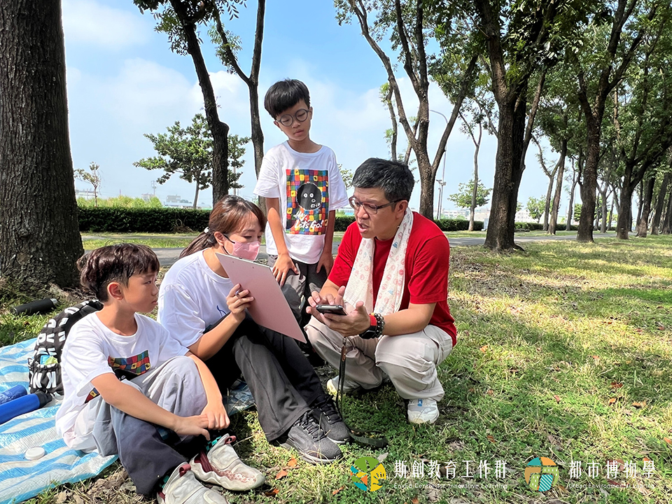
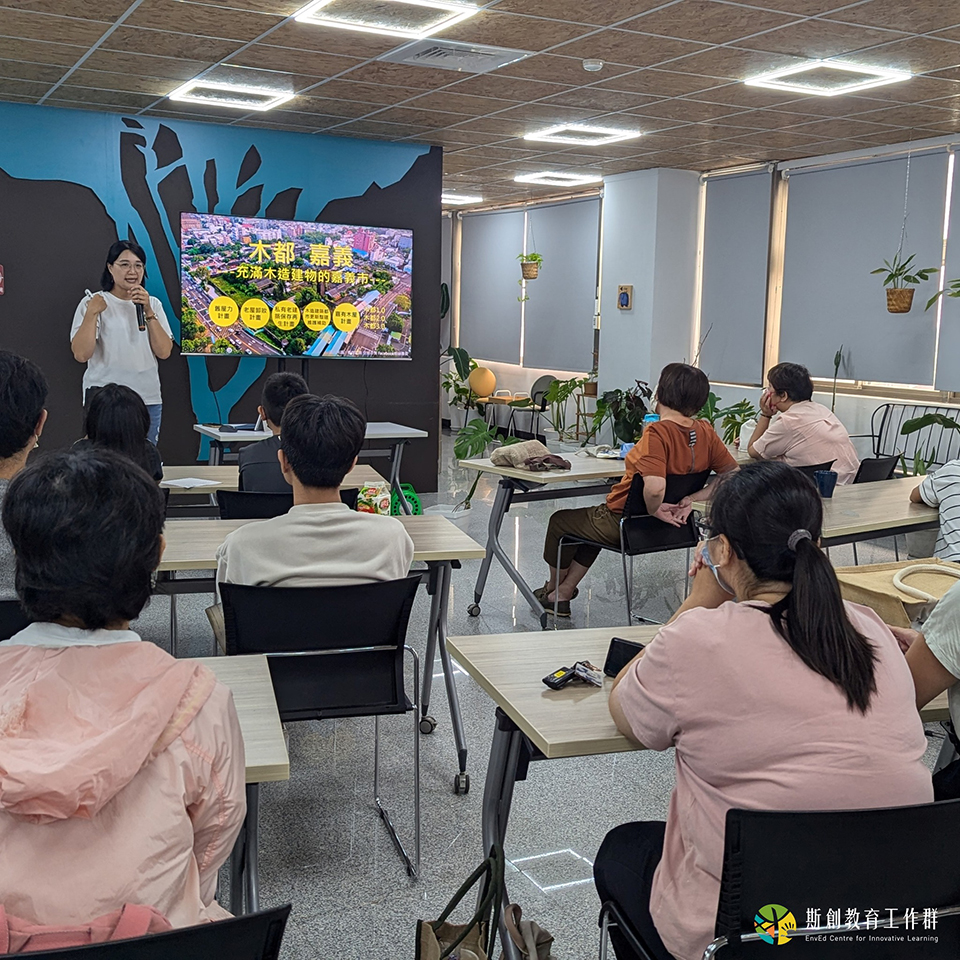
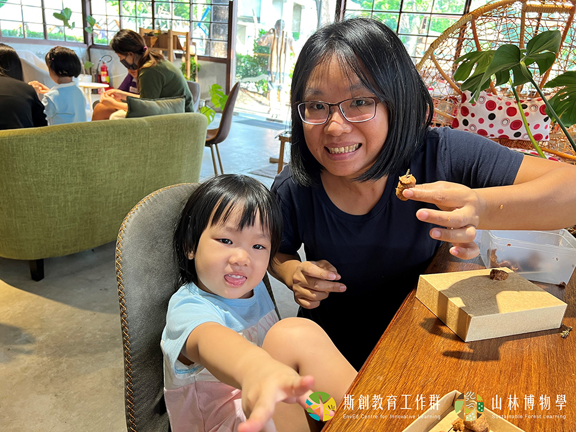

揪教育 Education
I + Forest 與木共好永續行動
21世紀在面臨氣候變遷的威脅下，世界各國不斷找尋調適及減緩氣候變遷的解方，從聯合國到各國政府、從科學研究到公民學會的專家們，都認為「永續的都會森林」是因應氣候變遷最具成本效益的選項之一，也是最符合以自然為本的解決方案。在永續都市的議題中，嘉義市擁有兩大優勢：公園密度最高的城市和獨特的木都文化地景，卻也同時面臨缺少與市民溝通木都固碳效益和淨零議題的挑戰。
本計畫以「培養公眾積極參與嘉義市的永續城市治理，為在地青年開創環境教育產業與就業模式」為目標，透過計畫的啟動契機，集結嘉義在地環境教育專業人員投入、規劃、產出屬於嘉義市的環境教育體驗方案，在未來擴大嘉義市都市／森林環境教育產業人才之需求，形成在地的環境教育產業。



此外，也藉由環境教育體驗方案的執行，讓市民認識嘉義市都市林的樹木資源與碳匯計算原理，鼓勵市民擔任公民科學家，產出市民動手調查繪製的碳匯資料，藉由樹木資料的彙整與發表，讓更多市民認識嘉義市都市林的資源與現況，在嘉義市淨零及減碳的努力上所扮演之重要角色；以及運用療癒的國產材手作活動，帶入木都嘉義在永續淨零議題上的關鍵優勢，同時作為嘉義市2050淨零排放的政策溝通工具，進而促使市民關懷、參與永續城市治理，也在趣味的環境教育引導中，吸引全國對淨零議題有興趣的民眾來到嘉義，認識新永續淨零的嘉義市。